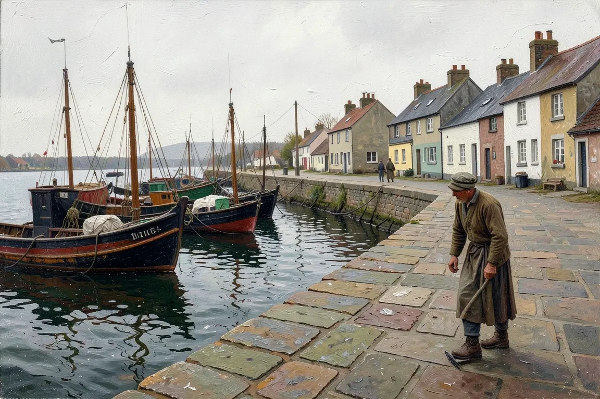

Vanlige mennesker, arbeid og land i enkelt lys og jordfarge. Maleren viser livet som det er, i naturlig størrelse, uten myte, uten ideal og uten søthet.

Kjerneidé
Et bilde bør registrere sin egen tids virkelige verden, og vanlig arbeid og vanlige mennesker er et like verdig motiv som en konge eller en gud.
Designprinsipper
Velg et motiv fra hverdagslivet: en bonde, en arbeider, en steinknuser, en gård, en vei.
Mal figurene i naturlig størrelse, eller store mot bildet, på 60 til 100 % av høyden.
Hold lyset enkelt og fra én side: en overskyet dag eller et vindu, uten gudommelig stråle.
Hold paletten til jordfarge: brunt, oker, grått, oliven og et matt svart, med ett dempet rødt eller blått.
Bygg formen med palettkniv eller en tung pensel i tykk, matt maling, og la grove kanter stå.
Komponer med figurene i et enkelt, nesten fris-aktig arrangement, utenfor midten og skåret av kanten som i livet.
Legg ikke til noen moral, noe idealisert legeme eller noen historie; vis tyngde, smuss, slitasje og holdning.